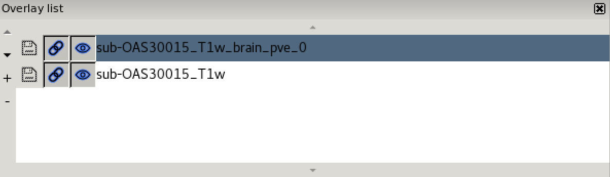

Imaging Data: Structure And Formats
Last updated on 2024-07-23 | Edit this page
Estimated time: 32 minutes
Overview
Questions
- How is imaging data represented in a computer?
- What are some of the popular imaging formats used?
- How do I view and navigate around an image/
Objectives
- Describe the structure of imaging data
- Understand the coordinate systems and mapping between voxels and real world.
- Demonstrate how to view images, navigate through volumes and change contrast
Introduction
Any medical image consists of two parts: a header and the image itself. The header consists of metadata that describe the image. This includes the patient’s demographic information such as the patient’s name, age, gender, and date of birth. The header also gives information on the image characteristics such as image dimension and some acquisition parameters. Because of the need to store more information, medical images require specific formats (different from e.g. .jpeg or .png).
Image formats: DICOM and NIfTI
DICOM (.dcm) stands for Digital Imaging and Communications in Medicine. It is a standard, internationally accepted format to view, store, retrieve and share medical images. Clinical imaging data are typically stored and transferred in the DICOM format, so DICOM can be considered the native format in which we get imaging data from the scanner.
NIfTI (.nii, .nii.gz) format is simpler and easier to support, so has been widely adopted by scientists in the neuroimaging community. Therefore, a vital initial step in processing the data is to convert images from DICOM to NIfTI format. In this practical we will work with data that have already been converted to NIfTI, but many tools for such conversions are available (for example dcm2niix).
Viewing image properties - fslhd and fslinfo
These tools enable various properties of an image to be viewed.
Clicking on the Applications in the upper left-hand corner and select
the terminal icon. This will open a terminal window that you will use to
type commands 
From the terminal window type:
OUTPUT
sub-OAS30015_acq-TSE_T2w.json sub-OAS30015_T1w_brain_seg.nii.gz
sub-OAS30015_acq-TSE_T2w.nii.gz sub-OAS30015_T1w.json
sub-OAS30015_T1w_brain_mask.nii.gz sub-OAS30015_T1w.nii.gz
sub-OAS30015_T1w_brain_mixeltype.nii.gz sub-OAS30015_T1w_orig.nii.gz
sub-OAS30015_T1w_brain.nii.gz sub-OAS30015_T2star.json
sub-OAS30015_T1w_brain_pve_0.nii.gz sub-OAS30015_T2star.nii.gz
sub-OAS30015_T1w_brain_pve_1.nii.gz sub-OAS30015_T2w.json
sub-OAS30015_T1w_brain_pve_2.nii.gz sub-OAS30015_T2w.nii.gz
sub-OAS30015_T1w_brain_pveseg.nii.gzThis means that we are going to be working in the
ImageDataVisualization subfolder under data in
your home directory (~). The ls command gives
you a list of the files in this directory.
Type
OUTPUT
filename sub-OAS30015_T1w.nii.gz
sizeof_hdr 348
data_type INT16
dim0 3
dim1 176
dim2 256
dim3 170
dim4 1
dim5 1
dim6 1
dim7 1
vox_units mm
time_units s
datatype 4
nbyper 2
bitpix 16
pixdim0 1.000000
pixdim1 1.000003
pixdim2 1.000000
pixdim3 1.000000
pixdim4 2.400000
pixdim5 0.000000
pixdim6 0.000000
pixdim7 0.000000
vox_offset 352
cal_max 0.000000
cal_min 0.000000
scl_slope 1.000000
scl_inter 0.000000
phase_dim 0
freq_dim 0
slice_dim 0
slice_name Unknown
slice_code 0
slice_start 0
slice_end 0
slice_duration 0.000000
toffset 0.000000
intent Unknown
intent_code 0
intent_name
intent_p1 0.000000
intent_p2 0.000000
intent_p3 0.000000
qform_name Scanner Anat
qform_code 1
qto_xyz:1 0.999466 -0.000520 -0.032767 -73.860321
qto_xyz:2 -0.000059 0.999844 -0.017685 -88.219193
qto_xyz:3 0.032771 0.017677 0.999307 -94.454788
qto_xyz:4 0.000000 0.000000 0.000000 1.000000
qform_xorient Left-to-Right
qform_yorient Posterior-to-Anterior
qform_zorient Inferior-to-Superior
sform_name Scanner Anat
sform_code 1
sto_xyz:1 0.999466 -0.000520 -0.032767 -73.860321
sto_xyz:2 -0.000059 0.999844 -0.017685 -88.219193
sto_xyz:3 0.032771 0.017677 0.999307 -94.454788
sto_xyz:4 0.000000 0.000000 0.000000 1.000000
sform_xorient Left-to-Right
sform_yorient Posterior-to-Anterior
sform_zorient Inferior-to-Superior
file_type NIFTI-1+
file_code 1
descrip 6.0.5:9e026117
aux_file OAS30015_MR_d2004OUTPUT
filename sub-OAS30015_T1w_brain_pve_0.nii.gz
sizeof_hdr 348
data_type FLOAT32
dim0 3
dim1 176
dim2 256
dim3 170
dim4 1
dim5 1
dim6 1
dim7 1
vox_units mm
time_units s
datatype 16
nbyper 4
bitpix 32
pixdim0 1.000000
pixdim1 1.000003
pixdim2 1.000000
pixdim3 1.000000
pixdim4 2.400000
pixdim5 0.000000
pixdim6 0.000000
pixdim7 0.000000
vox_offset 352
cal_max 0.000000
cal_min 0.000000
scl_slope 1.000000
scl_inter 0.000000
phase_dim 0
freq_dim 0
slice_dim 0
slice_name Unknown
slice_code 0
slice_start 0
slice_end 0
slice_duration 0.000000
toffset 0.000000
intent Unknown
intent_code 0
intent_name
intent_p1 0.000000
intent_p2 0.000000
intent_p3 0.000000
qform_name Scanner Anat
qform_code 1
qto_xyz:1 0.999466 -0.000520 -0.032767 -73.860321
qto_xyz:2 -0.000059 0.999844 -0.017685 -88.219193
qto_xyz:3 0.032771 0.017677 0.999307 -94.454788
qto_xyz:4 0.000000 0.000000 0.000000 1.000000
qform_xorient Left-to-Right
qform_yorient Posterior-to-Anterior
qform_zorient Inferior-to-Superior
sform_name Scanner Anat
sform_code 1
sto_xyz:1 0.999466 -0.000520 -0.032767 -73.860321
sto_xyz:2 -0.000059 0.999844 -0.017685 -88.219193
sto_xyz:3 0.032771 0.017677 0.999307 -94.454788
sto_xyz:4 0.000000 0.000000 0.000000 1.000000
sform_xorient Left-to-Right
sform_yorient Posterior-to-Anterior
sform_zorient Inferior-to-Superior
file_type NIFTI-1+
file_code 1
descrip 6.0.5:9e026117
aux_file OAS30015_MR_d2004Let’s look at the most important fields:
-
Data type (
data_type): Note that some images (sub-OAS30015_T1w) are of integer datatype, while others (sub-OAS30015_T1w_brain_pve_0) are of floating point datatype. Integer means that the intensity values can only take on whole numbers - no fractions - raw image data is normally of this type. Floating point means that intensity values can be fractional - the result of applying most statistical processing algorithms to image data results in images of floating point type. -
Image dimension (
dim1,dim2,dim3): this is the number of voxels in the image in the x,y,z dimension. This means that we have a cube of imaging data in the file that containsdim1columns,dim2rows, anddim3slices. -
Image resolution (Voxel size)
(
pixdim1,pixdim2,pixdim3) : this tells us the size that each voxel represents (in mm) in the x,y,z dimension.
As an example to understand the difference between image
dimension and image resolution, an MRI of a fruit fly or an elephant
could contain 256 slices (same dim3 value), but one image
would have to represent a much larger size in the real world than the
other (different pixdim3).
If the voxel dimension is the same in all directions (e.g. 1x1x1 mm) we talk about isotropic voxels. Having images with isotropic (or with very similar voxel size in the 3 directions) is desirable to perform reliable quantitative analyses.
-
Affine transformation (
qform): this field encodes a transformation or mapping that tells us how to convert the voxel location (i,j,k) to the real-world coordinates (x,y,z) (i.e. the coordinate system of the MRI scanner in which the image was acquired). The real-world coordinate system tends to be defined according to the patient. The x-axis tends to go from patient left to patient right, the y axis tends to go from anterior to posterior, and the z-axis goes from top to bottom of the patient. This mapping is very important, as this information will be needed to correctly visualize images and also to align them later. Figure from
Slicer
Figure from
Slicer
An alternative command to fslinfo is fslhd,
which displays a reduced set of properties about the images (mainly data
type, dimension and resolution).
Neuroimaging data analysis
Generic blueprint of a neuroimaging study
The steps to conduct a neuroimaging study are very similar to any other scientific experiment. As we go through the workshop today, think about where a certain analysis or tool falls in this generic pipeline:
| Step | Aim | Challenges and considerations |
|---|---|---|
| 1. Data Acquisition | Obtain good quality and consistent data | Trade offs often necessary (e.g. time vs resolution). Optimize protocol for your research aim. We will use already acquired data from OASIS. |
| 2. Data preprocessing | Reduce noise and prepare data for further analysis | Some steps are common across modalities (e.g. brain extraction, registration), others are modality-specific (e.g. motion correction, distortion correction). Requires careful checking. |
| 3. Single-subject analysis | Obtain measure of interest for each subject (often an image) | Modality-specific. Examples of single-subject outputs are tissue-type segmentation maps, fractional anisotropy map. |
| 4. Group-level analysis | Compare single-subject results across groups | Common step across modalities. Usually happens in standard space (i.e. after images from all subjects have been aligned to a reference image, called template). |
| 5. Statistical inference | Test reliability of results and generalizability to the population | Common across modalities. |
Neuroimaging data organization - Brain Imaging Data Structure (BIDS)
Neuroimaging experiments usually generate multiple images and non-imaging data. This can result in complicated data that can be arranged in many different ways. Despite the structure of a neuroimaging study is fairly standard, so far there is no consensus on how to organize and share data obtained in neuroimaging experiments. The Brain Imaging Data Structure (BIDS) is a framework for organizing data in a standardized way.
The main specifications regard how to structure data/metadata within a hierarchy of folders and how to name files. The data you will use in this workshop will mostly be organized according to this standard. If you are interested, you can find the details of these specifications in the BIDS starter kit.
Visualizing neuroimaging data - FSLeyes
FSLeyes (pronounced fossilize) is the FSL image viewer for 3D and 4D data. It does not perform any processing or analysis of images - that is done by separate tools. FSLeyes has lots of features to visualize data and results in a variety of useful ways, and some of these are shown in this introductory practical.
Here we provide a quick introduction to some FSLeyes features that you will be likely to use throughout the workshop, while other more specific features will be introduced at a later point. If you are already familiar with FSLeyes, feel free to skip this part and move on to another section of the workshop.
For a full overview of what FSLeyes can do, take a look at the FSLeyes user guide.
Getting started
Assuming you are still in the
~/data/ImageDataVisualization directory,
Start FSLeyes by typing in the terminal:
The & means that the program you asked for
(fsleyes) runs in the background in the terminal (or
shell), and you can keep typing and running other commands while fsleyes
continues to run. If you had not made fsleyes run in the
background (i.e., if you had just typed fsleyes without the
& at the end) then you would not be able to get
anything to run in that terminal until you killed fsleyes
(although you could still type things, but they would not run).
Basic image viewing
FSLeyes by defaults opens in the ortho view mode. If you add
image filenames on the command line (after typing fsleyes)
it will load them all automatically, and you can also add many options
from the command line. FSLeyes assumes that all of the images which you
load share a single coordinate system, but images do not have to have
the same field of view, number of voxels, or timepoints.
In FSLeyes, load in the image sub-OAS30015_T1w.nii.gz,
by pressing File > Add from file and selecting the image.
This image is a structural MRI T1-weighted scan.
Hold the mouse button down in one of the ortho canvases and move it around - see how various things update as you do so:
- the other canvases update their view
- the cursor’s position in both voxel and mm co-ordinates gets updated
- the image intensity at the cursor is shown
Navigating in an ortho view
You can interact with an orthographic view in a number of ways. Spend a couple of minutes trying each of these.
- Click, or click and drag on a canvas, to change the current location.
- Right click and drag on a canvas to draw a zoom rectangle. When you release the mouse, the canvas will zoom in to that rectangle.
- Hold down the ⌘ key (OSX) or CTRL key (Linux), and use your mouse wheel to zoom in and out of a canvas.
- Hold down the ⇧ key, and use your mouse wheel to change the current location along the depth axis (change the displayed slice) for that canvas.
- You can middle-click and drag, or hold down the ALT key and drag with the left mouse button, to pan around.
The display toolbar
 The display toolbar allows you to adjust the display
properties of the currently selected image. Play around with the
controls and note how the image display changes (but leave the “overlay
type” as “3D/4D volume”).
The display toolbar allows you to adjust the display
properties of the currently selected image. Play around with the
controls and note how the image display changes (but leave the “overlay
type” as “3D/4D volume”).
The word “overlay” is interchangeable with “image”. FSLeyes uses “overlay” because it can also load some other non-image file types such as surface images.
-
Overlay display panel: Clicking on the gear button
(
 ) opens a
panel with more display settings.
) opens a
panel with more display settings. - Overlay information: Clicking on the information button ( ) opens a panel with information about the image.
- Overlay name: You can change the image name here (for display purpose only, it will not change the actual filename).
- Overlay type: FSLeyes allows some images to be displayed in different ways. This should be set to “3D/4D volume” most of the time.
- Opacity: Adjust the opacity (transparency) here.
- Brightness/contrast: Quickly adjust the image brightness and contrast here.
- Display range: Use these fields for fine-grained control over how the image data is coloured, instead of using the brightness and contrast sliders.
- Colour map: Choose from several different colour maps.
- Enable -ve colour map: If you are viewing an image that has both positive and negative values, this button allows you to enable a colour map that is used for the negative values.
- -ve colour map: Choose a colour map for negative values here.
If FSLeyes does not have enough room to display a toolbar in full, it
will display left and right arrows (  ), (
), (  ) on each side of the toolbar - you can click
on these arrows to navigate back and forth through the toolbar.
) on each side of the toolbar - you can click
on these arrows to navigate back and forth through the toolbar.
The ortho toolbar

The ortho toolbar allows you to adjust and control the ortho view. Play with the controls, and try to figure out what each of them do.
-
View settings panel
 : Clicking on the spanner button opens
panel with advanced ortho view settings.
: Clicking on the spanner button opens
panel with advanced ortho view settings. - Screenshot : Clicking on the camera button will allow you to save the current scene, in this ortho view, to an image file.
-
Toggle canvases
 ,
,  ,
,  : These three buttons allow you to
toggle each of the three canvases on the ortho view.
: These three buttons allow you to
toggle each of the three canvases on the ortho view. -
Canvas layout
 ,
,  ,
,  : These three buttons allow you to choose
between laying out the canvases horizontally ( ),
vertically ( ), or in a grid ( ).
: These three buttons allow you to choose
between laying out the canvases horizontally ( ),
vertically ( ), or in a grid ( ). -
Movie mode
 : This button enables movie
mode - if you load a 4D image, and turn on movie mode, the image
will be “played” as a movie (the view will loop through each of the 3D
images in the 4D volume).
: This button enables movie
mode - if you load a 4D image, and turn on movie mode, the image
will be “played” as a movie (the view will loop through each of the 3D
images in the 4D volume). -
Toggle cursor/labels
 : This button allows you to toggle the
anatomical labels and location cursor on and off.
: This button allows you to toggle the
anatomical labels and location cursor on and off. -
Reset zoom
 : This button resets the zoom level to
100% on all three canvases.
: This button resets the zoom level to
100% on all three canvases. - Zoom slider: Change the zoom level on all three canvases with this slider.
Multiple views: lightbox
Open a lightbox view using View > Lightbox View.
If you drag the mouse around in the viewer you can see that the cursor
position is linked in the two views of the data (the ortho and the
lightbox views). This is particularly useful when you have several
images loaded in at the same time (you can view each in a separate view
window and move around all of them simultaneously). 
The lightbox view has a slightly different toolbar to the ortho toolbar.
-
View settings panel : Clicking on the spanner button opens
a panel with advanced lightbox view settings.
- Screenshot : Clicking on the camera button will allow you to save the current scene, in this lightbox view, to an image file.
-
Z axis , , : These three buttons allow you to
choose which slice plane to display in the lightbox view.
-
Movie mode : This button enables movie mode.
- Slice range: These sliders allow you to control the beginning and end points of the slices that are displayed.
- Zoom: This slicer allows you to control how many slices are displayed on the lightbox view.
- Slice spacing: This slider allows you to control the spacing between consecutive slices.
Unlinking cursors
You can “unlink” the cursor position between the two views (it is
linked by default). Go into one of the views, e.g., the lightbox view,
and press the spanner button (  ). This will open the lightbox view
settings panel. Turn off the Link Location option, and
close the view settings panel. You will now find that this view (the
lightbox view) is no longer linked to the “global” cursor position, and
you can move the cursor independently (in this view) from where it is in
the other views.
). This will open the lightbox view
settings panel. Turn off the Link Location option, and
close the view settings panel. You will now find that this view (the
lightbox view) is no longer linked to the “global” cursor position, and
you can move the cursor independently (in this view) from where it is in
the other views.
Close the lightbox view for now (click on the small red circle or X at the very top of the view).
Viewing multiple images
Now load in a second image
(sub-OAS30015_T1w_brain_pve_0.nii.gz) using File >
Add from file. This image is a tissue segmentation image of the
cerebrospinal fluid. In the bottom-left panel is a list of loaded images
- the overlay list. 
The overlay list shows the images which are currently loaded into FSLeyes. When you select an image in this list, it becomes the currently selected image - in FSLeyes, you can only select one image at a time.
You can use the controls on the display toolbar to adjust the display
properties of the currently selected image. Select the image you just
loaded (sub-OAS30015_T1w_brain_pve_0.nii.gz), and use the
display toolbar to change its colour map to Red-yellow.
The overlay list allows you to do the following:
- Change the currently selected overlay, by clicking on the overlay name.
- Identify the currently selected overlay (highlighted in blue).
- Add/remove overlays with the + and - buttons.
- Change the overlay display order with the ▲ and ▼ buttons.
- Show/hide each overlay with the eye button (
 ), or by double
clicking on the overlay name.
), or by double
clicking on the overlay name. - Link overlay display properties with the chainlink button ( ).
- Save an overlay if it has been edited, with the floppy disk button (
 ).
). - Left-click and hold the mouse button down on the overlay name to view the overlay source (e.g. its location in the file system).
Image information
In the bottom right corner of the FSLeyes window you will find the
location panel, which contains information about the current cursor
location, and image data values at that location. 
The controls on the left show the cursor location in world coordinates (millimetres). This coordinate system will change depending upon whether your image is in native subject space (scanner anatomical coordinates), standard template coordinates (e.g. MNI152), or some other coordinate space.
The controls in the middle show the cursor location in voxel coordinates, relative to the currently selected image. If the currently selected image is 4D (e.g. a time series image), the bottom control displays the currently selected volume (e.g. time point).
The area on the right displays the intensity value and voxel location at the current cursor location for all loaded images. Note that if you have images with different resolutions loaded, the voxel location will be different for each of them.
Viewing Atlases
It is often useful to look at images in standard space. This means that images are aligned (registered) to a reference template so that each coordinate corresponds to the same point in the brain in all images. This allows to perform group level analyses.
Let’s have a look at one of the most used templates, the MNI152.
-
Unload all the images from
fsleyesclicking on the minus (-) icon in the Overlay list panel (or open a new instance if you closed it before), press File > Add standard and select the imageMNI152_T1_1mm.As you can see it looks very similar to the T1w image we looked at earlier. This is basically an average T1w.
Because we are in standard space, we can turn on the atlas tools with Settings > Ortho View 1 > Atlases.
-
Now as you click around in the image you can see reporting of the probability of being in different brain structures. You might want to resize the different FSLeyes panels to increase the size of the Atlas information space (in general you do this by dragging around the edges of the different FSLeyes panels).
The atlas panel is organized into three main sections - Atlas information, Atlas search, and Atlas management. These sections are accessed by clicking on the tabs at the top of the panel. We will only cover the first two sections in this introductory practical.
Atlas information
The Atlas information tab displays information about
the current display location, relative to one or more atlases:  The list on the left allows you to select the atlases
that you wish to query - click the check boxes to the left of an atlas
to toggle information on and off for that atlas. The
Harvard-Oxford cortical and
sub-cortical structural atlases are both selected by
default. These are formed by averaging careful hand segmentations of
structural images of many separate individuals.
The list on the left allows you to select the atlases
that you wish to query - click the check boxes to the left of an atlas
to toggle information on and off for that atlas. The
Harvard-Oxford cortical and
sub-cortical structural atlases are both selected by
default. These are formed by averaging careful hand segmentations of
structural images of many separate individuals.
The panel on the right displays information about the current display location from each selected atlas. For probabilistic atlases, the region(s) corresponding to the display location are listed, along with their probabilities. For discrete atlases, the region at the current location is listed.
You may click on the Show/Hide links alongside each atlas and region name to toggle corresponding atlas images on and off.
Atlas search
The Atlas search tab allows you to browse through
the atlases, and search for specific regions. 
The list on the left displays all available atlases - the checkbox to the left of each atlas toggles an image for that atlas on and off.
When you select an atlas in this list, all of the regions in that atlas are listed in the area to the right. Again, the checkbox to the left of each region name toggles an image for that region on and off. The + button next to each region moves the display location to the (approximate) centre of that region.
The search field at the top of the region list allows you to filter
the regions that are displayed. 
When you type some characters into the search field, the region list will be filtered, so that only those regions with a name that contains the characters you entered are displayed. The atlas list on the left will also be updated so that any atlases which contain regions matching the search term are highlighted in bold.
Here are the screenshots you should see: 

For more information about the atlases available please refer to the FSL Wiki.
Quit FSLeyes when you have finished looking at the atlases.
BONUS EXERCISE: Viewing different imaging modalities
So far we have seen examples of MRI T1-weighted scans (T1w). In research as well as in clinical setting, we acquire multiple imaging modalities from the same individual to look at different brain characteristics. Even if we acquire all the modalities in the same session, the images may differ in orientation and resolution.
Let’s take two imaging modalities from a different participant:
sub-OAS30003_T1w.nii.gz and
sub-OAS30003_FLAIR.nii.gz
- Do they have the same dimension?
- Do they have the same resolution?
Now let’s have a look at them in FSLeyes:
Change the intensity range for both images to be between 0 and 1000.
Show/hide images with the eye button (  ), or by double clicking on the image name
in the overlay list.
), or by double clicking on the image name
in the overlay list.
- Do they have the same orientation?
- Which brain characteristics are more visible in the T1w and which are more visible on FLAIR?
- Use
fslhdto get information on dimension and voxel size. - Look at the location panel to help with information about orientation
Do the T1 and the FLAIR have the same dimension?
No-Using fslhd, we can see that the
dimensions (dim1, dim2, and dim3)
of the T1 are 176 x 240 x 161 and the dimensions of the FLAIR image are
256 x 256 x 35.
Do the T1 and the FLAIR have the same resolution?
No-From the same fslhd commands, the
resolution can be found in the fields pixdim1,
pixdim2, and pixdim3. For the T1 the
resolution is 1.20 x 1.05 x 1.05 mm. For the FLAIR it is 0.859 x 0.859 x
5.00mm
Do the T1 and the FLAIR have the same orientation?
No In the bottom right panel you should see the warning: “Images have different orientations/fields of view”
What brain characteristics are more visible in the T1w and which are more visible on FLAIR?
On T1w, grey and white matter are more easily distinguishable. On FLAIR, brain lesions – white matter hyperintensities – are more clearly visible
In the next episode on structural MRI, we will learn how to align (register) the two images together to be able to look at the same point in the brain in both images.
Additional material
For a more extensive tutorial on FSLeyes features, please refer to the FSL course - FSLeyes practical
FSLeyes manual: https://open.win.ox.ac.uk/pages/fsl/fsleyes/fsleyes/userdoc/index.html
References
- FSL course material: https://open.win.ox.ac.uk/pages/fslcourse/website/online_materials.html
- McCarthy, Paul. (2021). FSLeyes (1.2.0). Zenodo. https://doi.org/10.5281/zenodo.5504114
- Michael Joseph, Jerrold Jeyachandra, and Erin Dickie (eds): “Data Carpentry: Introduction to MRI Data Analysis.” Version 2019.11, November 2019, https://github.com/carpentries-incubator/SDC-BIDS-IntroMRI
Key Points
- Images are sheets or cubes of numbers.
- Medical image data is typically stored in DICOM or Nifti format. They include a header that contains information on the patient and/or the image characteristics.
- An affine transformation maps the voxel location to real-world coordinates.
- Medical image viewers allow to navigate an image, adjust contrast, and localise brain regions with respect to an atlas.